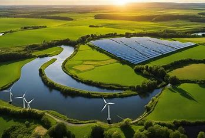
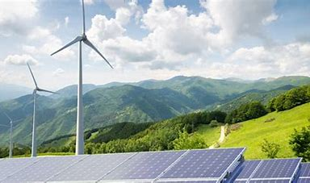
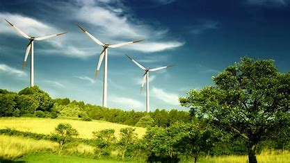
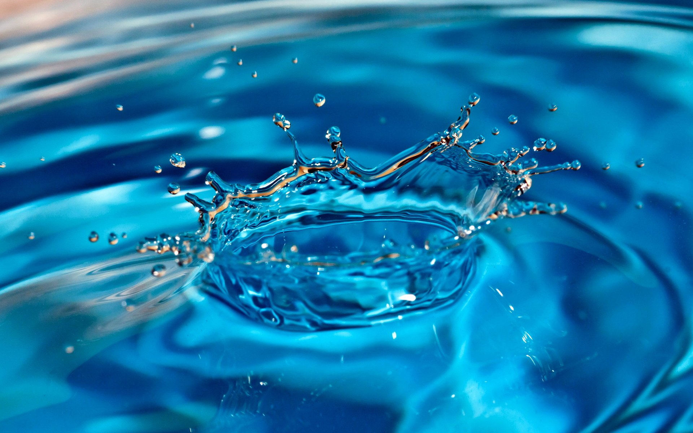
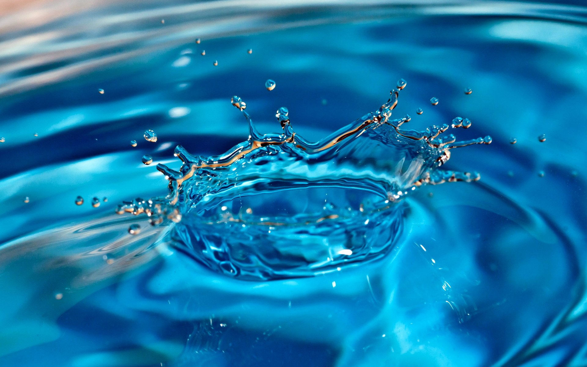

Renewable natural resources:
is resources that are constantly renewed without being depleted, such as water, sun, air, and soil.



Non-renewable natural resources:
Non-renewable resources are natural materials that are not renewed as quickly as they are consumed. They are limited resources that are found beneath the Earth's surface.
 
